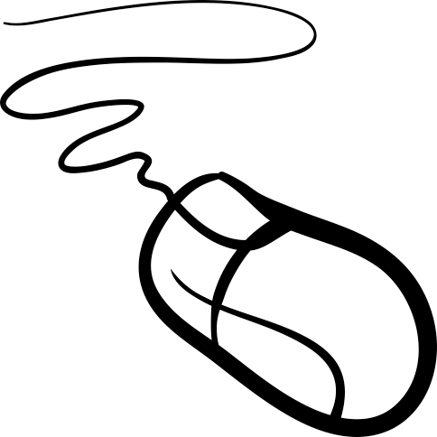

21 ans.
J'ai été étudiant infirmier pendant 2 an.
J'ai dû abandonner mes études infirmier et ait décidé de suivre les traces de mon père en venant dans le domaine de l'informatique.
Le sport, la cuisine et les systèmes sociaux.